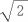
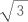
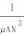
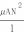

| 1級電気工事施工管理技術検定試験○×式一問一答問題集 | |
| 近藤孝之 | |
| (2017) | |
本書は 、1 級電気工事施工管理技術検定試験の一問一答問題集です。皆さんも、既に試験に向けて勉強を進めていることでしょう。
しかし、いよいよ試験を受ける日が近づいて、「もう少し、知識をまとめたい」あるいは「今までの勉強の整理整頓をしたい」と思う方も多いでしょう。
そんなときに役に立つのが、この一問一答問題集です。本書では、学科試験の各分野か ら 15 0 問を用意し、一問一答形式で知識を整理できるようにしておきました。
過去に実際に出題された問題をベースにして問題を作成してありますので、試験対策としては最適です。
通勤通学の車内や、ちょっとした空き時間などにぱらぱらとページをめくりながら、今までの勉強をまとめましょう。本書で 、1 級電気工事施工管理技術検定試験を突破できることをお祈りします。
なお、本書の姉妹書として、いろいろなものがあります。
詳しくは、下記をご覧ください。
↓
http://kondousiki.in.coocan.jp/
近藤 孝之
問 題 1
三相変圧器の結線に関して、 △- △結線は、平衡負荷の場合に線電流が相電流の  倍となる。
解 答1 ＝×
倍ではなく、  倍です。
問 題 2
三相変圧器の結線に関して、 △- Ｙ結線は、発電所の昇圧用変圧器には用いられない。
解 答2 ＝×
逆です。 △- Ｙ結線は、発電所の昇圧用変圧器に多く用いられます。
問 題 3
乾式コンデンサは、コンデンサ内部に 、 8 0 ℃において流動性がある絶縁油又はこれと同等以上の性能を持つ液体含浸剤を充てんしたコンデンサである。
解 答3 ＝×
これは、油入コンデンサのことです。乾式コンデンサは、コンデンサ内部に 、 8 0 ℃において流動性のない固体含浸剤又は気体を充てんしたコンデンサです。
問 題 4
保安装置内蔵コンデンサは、コンデンサの内部に異常が生じた際、異常素子又は素体に電圧が加わらないように切り離しできるコンデンサである。
解 答4 ＝○
この記述の通りです。
問 題 5
スポットネットワーク配電方式に用いられるネットワークプロテクタの継電器の一般的な動作特性の組合せは、逆電力投入特性・差電圧投入特性・無電圧投入特性である。
解 答5 ＝×
最初が違います。逆電力投入特性ではなく、逆電力遮断特性です。他 の2 つは正しいです。
問 題 6
電力系統における短絡電流の抑制対策としては、高インピーダンスの変圧器を採用することがある。
解 答6 ＝○
高インピーダンスの変圧器を採用することがあります。
問 題 7
据置鉛蓄電池に関して、蓄電池から取り出せる容量は、放電電流が大きくなるほど増大する。
解 答7 ＝×
逆です。蓄電池から取り出せる容量は、放電電流が大きくなるほど減少します。
問 題 8
据置鉛蓄電池に関して、蓄電池の内部抵抗は、残存容量の減少にともない減少する。
解 答8 ＝×
逆です。蓄電池の内部抵抗は、残存容量の減少にともない増大します。
問 題 9
水力発電所において、水車の比速度が大きいほど、キャビテーションを抑制できる。
解 答9 ＝×
逆です。水車の比速度が小さいほど、キャビテーションを抑制できます。
問 題 10
水力発電所において、キャビテーションが発生すると、効率や出力が低下する。
解 答 1 0 ＝○
低下します。
問 題 11
図に示す磁路の平均長さ ｌ [m ] 、磁路の断面積 Ａ [m 2 ] 、透磁率 μ [H/m ] の環状鉄心に巻き数 Ｎ のコイルがあるとき、コイルの自己インダクタンス Ｌ ＝  [H ] である。ただし、磁束の漏れはないものとする。
図はこちら
↓
http://kondousiki.in.coocan.jp/Download/ 1 級電気工事施工管理 問 11.pdf
解 答 1 1 ＝×
分子と分母が逆です。正しくは、 Ｌ ＝  [H ] です。
問 題 12
ナトリウム・硫黄電池 （ NA S 電池）の活物質としては、負極に硫黄、正極にナトリウムを用いる。
解 答 1 2 ＝×
正負が逆です。正しくは、正極に硫黄、負極にナトリウムを用います。
問 題 13
ナトリウム・硫黄電池 （ NA S 電池）は、電力の貯蔵には向いていない。
解 答 1 3 ＝×
逆です。高エネルギー密度などの特長を持っており、電力貯蔵用に適しています。
問 題 14
ナトリウム・硫黄電池 （ NA S 電池）は、放電時には、ナトリウムイオンと硫黄が結合して多硫化ナトリウムが生成される。
解 答 1 4 ＝○
多硫化ナトリウムが生成されます。
問 題 15
変電所で用いられる機器のうち、計器用変成器は、直接測定することができない極低電圧や微小電流を測定しやすい電圧や電流に変成する。
解 答 1 5 ＝×
計器用変成器は、直接測定することができない高電圧や大電流を測定しやすい電圧や電流に変成します。
問 題 16
変電所で用いられる機器のうち、接地開閉器は、無負荷時に回路を切り離し、作業の安全を確保するために使用する。
解 答 1 6 ＝×
これは、断路器のことです。接地開閉器は、遮断器や断路器を開路した後に、閉路して残留電荷を放電させます。
問 題 17
後備保護継電器は、最も速やかに故障区間を最小範囲に限定し除去するものである。
解 答 1 7 ＝×
これは、主保護継電器のことです。後備保護継電器は、主保護継電器がロックされているなどの理由で動作できない場合に動作して、故障部分を除去するものです。
問 題 18
距離継電方式は、送電線故障時の電流と電圧により故障点までの線路インピーダンスを測定し、保護範囲の内外を判断する方式である。
解 答 1 8 ＝○
この記述の通りです。
問 題 19
流込み式水力発電は、季節や気象条件等に左右されるため、出力変動が大きい。
解 答 1 9 ＝×
これは、太陽光発電や風力発電のことです。流込み式水力発電は、河川の水をそのまま利用するため、出力は河川自流に依存します。
問 題 20
火力発電は、効率が良く発電単価が低い発電機を優先して運転する。
解 答 2 0 ＝○
発電単価が低い発電機を優先して運転します。
問 題 21
送配電系統におけるフェランチ現象は、架空電線路よりも地中電線路のほうが発生しやすい。
解 答 2 1 ＝○
この記述の通りです。
問 題 22
送配電系統におけるフェランチ現象は、電線路のこう長が短いほど発生しやすい。
解 答 2 2 ＝×
逆です。電線路のこう長が長いほど発生しやすいです。
問 題 23
送配電系統におけるフェランチ現象は、深夜などの軽負荷時には発生しにくい。
解 答 2 3 ＝×
逆です。深夜などの軽負荷時に発生しやすいです。
問 題 24
送配電系統におけるフェランチ現象は、進み力率の負荷が多く接続されているときには発生しにくい。
解 答 2 4 ＝×
逆です。進み力率の負荷が多く接続されているときに発生しやすいです。
問 題 25
分散型電源の異常又は故障は、高圧の電力系統に分散型電源を連系する場合において、分散型電源を自動的に解列しなければならない事象として、「電気設備の技術基準とその解釈」上、定められていない。
解 答 2 5 ＝×
逆です。定められています。
問 題 26
分散型電源の単独運転は、高圧の電力系統に分散型電源を連系する場合において、分散型電源を自動的に解列しなければならない事象として、「電気設備の技術基準とその解釈」上、定められている。
解 答 2 6 ＝○
定められています。
問 題 27
連系している電力系統の短絡事故又は地絡事故は、分散型電源の異常又は故障は、高圧の電力系統に分散型電源を連系する場合において、分散型電源を自動的に解列しなければならない事象として、「電気設備の技術基準とその解釈」上、定められていない。
解 答 2 7 ＝×
逆です。定められています。
問 題 28
連系している電力系統における高調波の発生は、分散型電源の異常又は故障は、高圧の電力系統に分散型電源を連系する場合において、分散型電源を自動的に解列しなければならない事象として、「電気設備の技術基準とその解釈」上、定められていない。
解 答 2 8 ＝○
定められていません。
問 題 29
高調波電流の低減対策として、配電系統の短絡容量を大きくする。
解 答 2 9 ＝○
この記述の通りです。
問 題 30
高調波により電力用コンデンサは、過熱し焼損に至る事がある。
解 答 3 0 ＝○
この記述の通りです。
問 題 31
高調波により変圧器など鉄心を有する機器の鉄損が減少する。
解 答 3 1 ＝×
逆です。高調波により変圧器など鉄心を有する機器の鉄損が増大します。
問 題 32
高調波電流の抑制のためフィルタを設置する。
解 答 3 2 ＝○
フィルタにより、高調波が抑制されます。
問 題 33
地中電線路におけ る C V ケーブルの絶縁劣化診断法として、直流漏れ電流法がある。
解 答 3 3 ＝○
直流漏れ電流法は、地中電線路におけ る C V ケーブルの絶縁劣化診断法です。
問 題 34
残留電荷法は、地中電線路におけ る C V ケーブルの絶縁劣化診断法ではない。
解 答 3 4 ＝×
残留電荷法も、地中電線路におけ る C V ケーブルの絶縁劣化診断法です。この他に、直流高圧法もあります。
問 題 35
一般的な事務所ビルとし天井高 を 6 m 未満とした場合、配電盤室は、平均演色評価数 （ R a ） が 8 0 以上のランプを使用することが望ましい所として、｢日本工業規 格 (JIS ) ｣の屋内作業場の照明基準上、定められている。
解 答 3 5 ＝×
配電盤室は、このようには定められていません。このように定められているのは、化粧室です。
問 題 36
定格電 流 20 A の配線用遮断器に、定格電 流 15 A のコンセントを接続し、配線の太さを直 径 1.6m m とするのは、一般事務室に設けるコンセント専用の分岐回路として、「電気設備の技術基準とその解釈」上、誤っている。
ただし、配線 は VV F ケーブルとし、長さ は 10 m 、 コンセントの施設数 は1 個とする。
解 答 3 6 ＝○
誤っていません。これでよいのです。
問 題 37
定格電 流 30 A の過電流遮断器に、定格電 流 30 A のコンセントを接続し、配線の太さを直 径 2.6m m とするのは、一般事務室に設けるコンセント専用の分岐回路として、「電気設備の技術基準とその解釈」上、誤っていない。
ただし、配線 は VV F ケーブルとし、長さ は 10 m 、 コンセントの施設数 は1 個とする
解 答 3 7 ＝○
誤っていないです。
問 題 38
三相誘導電動機のリアクトル始動法は、比較的大容量の電動機に採用され、始動電流を全電圧始動時 の 2 5 ％まで低減可能である。
解 答 3 8 ＝×
これは、三相誘導電動機のコンドルフア始動法のことです。リアクトル始動法は、始動用リアクトルを挿入して始動電流を低減させる方式です。
問 題 39
三相誘導電動機のインバータ始動法は、可変周波数・可変電圧の交流を作り出し、誘導電動機を始動する方式である。
解 答 3 9 ＝○
この記述の通りです。
問 題 40
P F・S 形受電設備の主遮断装置として用いる限流ヒューズ付高圧交流負荷開閉器は 、2 極を同時に開閉する構造であり 、3 極は同時に開閉できない。
解 答 4 0 ＝×
3 極を同時に開閉する構造です。
問 題 41
P F・S 形受電設備の主遮断装置として用いる限流ヒューズ付高圧交流負荷開閉器は、限流ヒューズ の1 相が遮断した場合は、ストライカが動作して欠相運転を防止する。
解 答 4 1 ＝○
防止します。
問 題 42
キュービクル式高圧受電設備は、変圧器容量 が 500 k V・A 以下の場合は、変圧器の開閉装置として高圧カットアウトを使用することができる。
解 答 4 2 ＝×
高圧カットアウトを使用することができるのは、変圧器容量 が 500 k V・A 以下ではなく 、 300 k V・A 以下の場合です。
問 題 43
キュービクル式高圧受電設備の換気は、通気孔などによって、自然換気ができる構造とする。ただし、収納する変圧器容量の合計 が 300 k V・A を超える場合は、機械換気装置による換気としてもよい。
解 答 4 3 ＝×
機械換気装置による換気としてもよいのは、収納する変圧器容量の合計 が 300 k V・A ではなく 、 500 k V・A を超える場合です。
問 題 44
スポットネットワーク受電方式は 、1 回線受電方式に比べて供給信頼度は低い。
解 答 4 4 ＝×
逆です 。1 回線受電方式に比べて多回線で供給されるので供給信頼度は高いです。
問 題 45
スポットネットワーク受電方式では、ネットワーク母線の短絡保護は、プロテクタヒューズで行われる。
解 答 4 5 ＝○
この記述の通りです。
問 題 46
自家用発電設備のディーゼル機関は、ガスタービンに比べて発生振動は小さい。
解 答 4 6 ＝×
逆です。ディーゼル機関は往復動機関のため、ガスタービンに比べて発生振動は大きいです。
問 題 47
自家用発電設備のディーゼル機関は、軽負荷時では燃料の完全燃焼が得られにくい。
解 答 4 7 ＝○
軽負荷時では燃料の完全燃焼が得られにくいです。
問 題 48
無停電電源装置 （ UP S ）の常時インバータ給電方式とは、通常運転時は常用電源を整流器により直流に整流した後に、インバータによって交流に再変換して負荷へ供給する方式である。
解 答 4 8 ＝○
この記述の通りです。
問 題 49
トリクル充電は、交流電源の通電時には、蓄電池は負荷と切り離して微小電流で充電される。交流電源の停電時のみ、蓄電池から負荷へ電力を供給する。
解 答 4 9 ＝○
この記述の通りです。
問 題 50
中央監視制御の伝送端末装置と現場機器との入出力条件に関して、電流の計測を行うための入出力条件を 、 AC 4～ 20 m A のアナログ信号とするのは正しい。
解 答 5 0 ＝×
A C ではなく 、 DC 4～ 20 m A のアナログ信号とします。
問 題 51
中央監視制御の伝送端末装置と現場機器との入出力条件に関して、発停制御を行うための入出力条件を、接点信号とするのは正しい。
解 答 5 1 ＝○
正しいです。
問 題 52
延べ面 積 1 000 m 2 以上の地下街は、主要な避難経路に設ける誘導灯の非常電源の容量 を 6 0 分間以上としなければならない防火対象物として、「消防法」上、定められている。
解 答 5 2 ＝○
定められています。
問 題 53
延べ面 積 50 000 m 2 以上の百貨店は、主要な避難経路に設ける誘導灯の非常電源の容量 を 6 0 分間以上としなければならない防火対象物として、「消防法」上、定められていない。
解 答 5 3 ＝×
定められていないのではなく、定められています。
問 題 54
非常用の照明器具（照明カバーその他照明器具に付属するものを含む）のうち主要な部分は、難燃材料で造り、又は覆わなければならない。
解 答 5 4 ＝○
この記述の通りです。
問 題 55
非常用の照明装置は、地下街の各構えの接する地下道の床面におい て 5 l x 以上の照度を確保しなければならない。
解 答 5 5 ＝×
5 l x ではなく 、 10l x 以上の照度を確保しなければなりません。
問 題 56
レイ ヤ2 スイッチは、ネットワーク層でのルーティング機能を搭載した伝送装置である。
解 答 5 6 ＝×
これは、ルータのことです。レイ ヤ2 スイッチは 、 MA C アドレスを用いて中継先を判断し、中継します。
問 題 57
ファイアウォールは、不正なアクセスを遮断し内部のネットワークの安全を維持する。
解 答 5 7 ＝○
この記述の通りです。ファイアウォールは、直訳すると「防火壁」になります。
問 題 58
ネットワークトポロジには、スター型、バス型しかない。
解 答 5 8 ＝×
ネットワークトポロジには、スター型、バス型、リング型などがあります。
問 題 59
電話・情報設備に関する図記号 の PB X は、局線中継台である。
解 答 5 9 ＝×
PB X は、交換機です。局線中継台は 、 AT T です。
問 題 60
VLA N 機能は、スイッチと端末の物理的な接続形態によら ず, 論理的に複数の端末をグループ化するものである。
解 答 6 0 ＝○
この記述の通りです。
問 題 61
カテナリちょう架式の電車線に関して、シンプル式では、ちょう架線からハンガによってトロリ線をちょう架する。
解 答 6 1 ＝○
この記述の通りです。
問 題 62
カテナリちょう架式の電車線に関して、支持点におけるちょう架線とトロリ線との垂直間隔を、支持高という。
解 答 6 2 ＝×
支持点におけるちょう架線とトロリ線との垂直間隔を、架高といいます。支持高という用語はありません。
問 題 63
直流電気鉄道のき電回路における、電圧降下の軽減対策としては、変電所間隔を長くする。
解 答 6 3 ＝×
逆です。変電所の新設により、変電所間隔を短くします。
問 題 64
直流電気鉄道のき電回路における、電圧降下の軽減対策としては、き電線を細くしたり、条数を少なくする。
解 答 6 4 ＝×
逆です。き電線を太くしたり、条数を多くします。
問 題 65
直流電気鉄道のき電回路における、電圧降下の軽減対策としては、上下線一括き電方式を採用する。
解 答 6 5 ＝○
上下線一括き電方式を採用するのは、電圧降下の軽減対策になります。
問 題 66
鉄道信号保安に関する用語の定義として、軌道回路とは、信号機、転てつ器などの相互間の連鎖を行う装置である。
解 答 6 6 ＝×
これは、連動装置のことです。軌道回路とは、列車又は車両を検知するために、レールを用いる電気回路をいいます。
問 題 67
鉄道信号保安に関する用語の定義として、表示とは、合図、標識などで条件・状態を表すことをいう。
解 答 6 7 ＝○
正しいです。
問 題 68
道路照明の平均路面輝度とは、運転者の視点から見た路面の平均輝度で、路面の舗装種類や乾湿の程度によっては変化しない。
解 答 6 8 ＝×
路面の舗装種類や乾湿の程度によって変化します。
問 題 69
道路照明の外部条件とは、建物の照明や広告灯、ネオンサイン等道路交通に影響を及ぼす光が、道路沿道に存在する程度をいう。
解 答 6 9 ＝○
この記述の通りです。
問 題 70
光ファイバケーブルには許容される布設張力があるが、これを超えても伝送特性及び長期信頼性には影響しない。
解 答 7 0 ＝×
許容される布設張力を超えると伝送特性及び長期信頼性が低下します。
問 題 71
光ファイバケーブルの損失測定方法には、光ファイバ内の電気抵抗を利用する方法がある。
解 答 7 1 ＝×
電気抵抗を利用する方法は、ありません。光ファイバ内の屈折率のゆらぎによるフレネル反射を利用する方法があります。
問 題 72
光ファイバケーブルの接続損失の要因には、光ファイバ心線の軸ずれ、光ファイバ端面の分離等がある。
解 答 7 2 ＝○
光ファイバ心線の軸ずれ、光ファイバ端面の分離等は、光ファイバケーブルの接続損失の要因になります。
問 題 73
空気調和設備の熱源機台数制御は 、 VA V ユニットごとの要求風量から送風機の所要回転数を制御する方式をいう。
解 答 7 3 ＝×
これは、送風機回転数制御のことです。熱源機台数制御は、二次側の空調負荷に応じ熱源機の運転台数を制御する方式をいいます。
問 題 74
空気調和設備 の C O ２ 濃度制御は、還気ダクトや室内に設置し た C O ２ 濃度センサにより外気導入ダンパの開度を制御し、外気量を制御する方式をいう。
解 答 7 4 ＝○
この記述の通りです。
問 題 75
標準貫入試験か らN 値が求まる。
解 答 7 5 ＝○
この記述の通りです。
問 題 76
粒度試験から粘着力が求まる。
解 答 7 6 ＝×
粘着力が求まるのは、せん断試験です。粒度試験からは、均等係数が求まります。
問 題 77
建設工事に使用するロードローラは、タイヤの空気圧を変えることにより接地圧の調整が可能である。
解 答 7 7 ＝×
これは、タイヤローラのことです。ロードローラは、平滑車輪により締固めを行うもので、路床の仕上げ転圧に適しています。
問 題 78
建設工事に使用する振動ローラは、ローラに起振機を組み合わせ、振動によって締固めを行うもので砂質土の締固めに適している。
解 答 7 8 ＝○
この記述の通りです。
問 題 79
親杭横矢板土留め壁は、良質地盤に広く用いられているが、遮水性がよくないこと、掘削底面以下の根入れ部分の連続性が保たれないことなどのため、地下水位の高い地盤や軟弱な地盤などには適さない。
解 答 7 9 ＝○
この記述の通りです。
問 題 80
カントとは、曲線部における外側レールと内側レールの内のりをいう。
解 答 8 0 ＝×
カントとは、曲線部における外側レールと内側レールの高低差をいいます。内のりではありません。
問 題 81
バラスト軌道とは、コンクリート製の軌道である。
解 答 8 1 ＝×
コンクリート製ではありません。バラスト軌道とは、道床に砂利や砕石を用いた軌道です。
問 題 82
常温時における温度変化で鉄筋とコンクリートにずれが生じないのは、二つの部材の線膨張係数が大きく異なるからである。
解 答 8 2 ＝×
大きく異なるからではなく、二つの部材の線膨張係数がほぼ等しいからです。
問 題 83
水セメント比の大きいコンクリートやセメントペースト量の多いコンクリートは、収縮率が小さくひび割れが生じることがある。
解 答 8 3 ＝×
収縮率が小さくではなく、収縮率が大きいためにひび割れが生じることがあります。
問 題 84
建築物のラーメン構造は、三角形を一つの単位として部材を組立てた構造である。
解 答 8 4 ＝×
これは、トラス構造のことです。ラーメン構造は、柱と梁を剛強に接続した構造です。
問 題 85
建築物のトラス構造は、ラーメン構造に比べて部材の数は少なくなる。
解 答 8 5 ＝×
逆です。トラス構造は、ラーメン構造に比べて部材の数は多くなります。
問 題 86
交流不足電圧継電器の基本器具番号は 、 5 1 である。
解 答 8 6 ＝×
5 1 は、交流過電流継電器です。交流不足電圧継電器の基本器具番号は 、 2 7 です。
問 題 87
地絡方向継電器の基本器具番号は 、 6 7 である。
解 答 8 7 ＝○
6 7 で間違いありません。
問 題 88
安全管理者の氏名は、下請負人が元請負人に対して契約締結後遅滞なく書面をもって通知する事項として、「建設工事標準下請契約約款」上、定められていない。
解 答 8 8 ＝×
安全管理者の氏名は、書面をもって通知する事項として、「建設工事標準下請契約約款」上、定められています。
問 題 89
衛星管理者の氏名は、下請負人が元請負人に対して契約締結後遅滞なく書面をもって通知する事項として、「建設工事標準下請契約約款」上、定められていない。
解 答 8 9 ＝○
衛生管理者は、定められていません。
問 題 90
水力発電所の通水検査として、導水路、水槽、水圧鉄管、放水路に充水し、漏水などの異常がないことを確認する。
解 答 9 0 ＝○
この記述の通りです。
問 題 91
高圧配電盤の計器面における照度 を 300 l x としたのは、受電室における高圧受電設備の施工に関する記述として、「高圧受電設備規程」上、誤っていない。
解 答 9 1 ＝○
誤っていません。
問 題 92
架空送電線路の施工で、延線作業での架線ウインチのキャプスタンの軸方向は、メッセンジャワイヤの巻取り方向に対して平行とする。
解 答 9 2 ＝×
並行ではありません。キャプスタンの軸方向は、メッセンジャワイヤの巻取り方向に対して垂直とします。
問 題 93
架空送電線路の施工で、緊線工事は、角度鉄塔や耐張鉄塔のように、がいしが耐張状となっている鉄塔区間ごとに行う。
解 答 9 3 ＝○
正しいです。
問 題 94
電気用品安全法の適用を受けた二種金属製線ぴに照明器具を取り付けるので、線ぴ内の容易に点検できる箇所で電線を分岐する。
解 答 9 4 ＝○
正しいです。
問 題 95
乾燥した点検できない隠ぺい場所にバスダクトを施設したのは、低圧屋内配線のバスダクト工事に関して、「電気設備の技術基準とその解釈」上、不適当である。
解 答 9 5 ＝○
不適当です。点検できない場所ではなく、点検できる場所でなければなりません。
問 題 96
使用電 圧 400 V のバスダクト にC 種接地工事を施したのは、低圧屋内配線のバスダクト工事に関して、「電気設備の技術基準とその解釈」上、不適当である。
解 答 9 6 ＝×
この場合 、C 種接地工事なら不適当ではありません。
問 題 97
力率改善のため、個々の低圧電動機に低圧進相用コンデンサを設けたのは、不適当である。
解 答 9 7 ＝×
不適当ではありません。個々の低圧電動機に低圧進相用コンデンサを設ければ、力率改善になります。
問 題 98
三 相 200 V 定格出 力 11 k W の電動機の始動方式を、スターデルタ始動としたのは、正しい。
解 答 9 8 ＝○
正しいです。
問 題 99
直流電気鉄道における帰線の漏れ電流の低減対策としては、ロングレールを採用して、帰線抵抗を大きくする。
解 答 9 9 ＝×
帰線抵抗を大きくするのではなく、小さくします。
問 題 100
直流電気鉄道における帰線の漏れ電流の低減対策としては、クロスボンドを増設して、帰線抵抗を小さくする。
解 答 10 0 ＝○
正しいです。
問 題 101
直流電気鉄道における帰線の漏れ電流の低減対策としては、道床の排水をよくして、レールからの漏れ抵抗を小さくする。
解 答 10 1 ＝×
漏れ抵抗を小さくするのではなく、大きくします。
問 題 102
有線電気通信設備の架空電線に関して、保護網と架空電線との垂直離隔距離 を 60 c m としたのは、「有線電気通信法」上、誤っている。
解 答 10 2 ＝×
誤っていません。これでよいのです。
問 題 103
有線電気通信設備の架空電線に関して、架空電線と低圧の強電流ケーブルが交差するので、架空電線を下に設置し、強電流ケーブルとの離隔 を 30 c m としたのは、「有線電気通信法」上、誤っていない。
解 答 10 3 ＝○
誤っていません。
問 題 104
地中電線路の施工に関して、洞道内のケーブルは、熱伸縮の影響を少なくするため、スネークの変曲点でクリートで拘束する。
解 答 10 4 ＝○
クリートで拘束します。
問 題 105
地中電線路の施工に関して、傾斜地に布設されたケーブルの熱伸縮による滑落を防止するため、上端側の管路口にスプリング方式のストッパを取り付ける。
解 答 10 5 ＝○
この記述の通りです。
問 題 106
公共建築工事の設計図書間に相違がある場合、一般的に優先順位の最も高いものは、特記仕様書である。
解 答 10 6 ＝×
優先順位の最も高いものは、現場説明書及び質問回答書です。
問 題 107
工種別施工計画書は、一工程の施工の確認手順及び施工の具体的な計画を含めて作成する。
解 答 10 7 ＝○
具体的な計画を含めて作成します。
問 題 108
総合施工計画書は、現場担当者だけで検討することなく、会社内の組織を活用して作成する。
解 答 10 8 ＝○
会社内の組織を活用して作成します。
問 題 109
所轄の消防署及び警察署並びに病院の位置は、市街地での新築工事現場の仮設計画立案のための現地調査の確認事項として、重要度が高い。
解 答 10 9 ＝×
高くありません。所轄の消防署及び警察署並びに病院の位置は、重要度が低いです。
問 題 110
バーチャート工程表は、全体工期に影響を与える作業がどれであるかがわからない。
解 答 11 0 ＝×
これは、ガントチャート工程表のことです。バーチャート工程表は、計画と実績の比較が容易です。
問 題 111
ガントチャート工程表は、各作業の現時点における達成度がわかりやすい。
解 答 11 1 ＝○
わかりやすいです。
問 題 112
アロー形ネットワーク工程表では、矢線は作業を示し、その長さは作業に要する時間を表す。
解 答 11 2 ＝×
矢印の長さは、時間とは関係ありません。
問 題 113
アロー形ネットワーク工程表では、イベントに入ってくる矢線がすべて完了した後でなくても、出る矢線は開始できる。
解 答 11 3 ＝×
イベントに入ってくる矢線がすべて完了した後でないと、出る矢線は開始できません。
問 題 114
アロー形ネットワーク工程表では、イベントは、作業と作業を結合する点であり、対象作業の開始点又は終了点である。
解 答 11 4 ＝○
この記述の通りです。
問 題 115
ガントチャート工程表は、縦軸を建物の階層とし、システム化されたフローチャートを階段状に積み上げた工程表であり、高層ビルの繰り返し作業の工程管理に適している。
解 答 11 5 ＝×
高層ビルの繰り返し作業の工程管理に適しているのは、タクト工程表です。ガントチャート工程表は、横棒によって作業の進捗状況を表します。
問 題 116
レビューとは、設定された目標を達成するための対象の適切性、妥当性又は有効性の確定である。
解 答 11 6 ＝○
この記述の通りです。
問 題 117
管理図とは、不良品等の発生個数や損失金額等を原因別に分類し、大きい順に左から並べて棒グラフとし、さらにこれらの大きさを順次累積した折れ線グラフで表した図である。
解 答 11 7 ＝×
棒グラフと折れ線グラフの組合せは、パレート図です。管理図は、縦軸に管理値、横軸に時間を取り、管理値が限界値を超えていないかどうかを見るものです。
問 題 118
ヒストグラムは 、2 つの変量の相関関係を見るために、縦軸と横軸 に2 つの変量を取り、データをプロットしたものである。
解 答 11 8 ＝×
これは、散布図のことです。ヒストグラムは、縦軸に度数、横軸に階級を取った棒グラフで、バラつきを見るものです。
問 題 119
公称電 圧 6 600 V の交流電路に使用する高圧ケーブルの絶縁性能の試験（絶縁耐力試験）は、所定の交流試験電圧を、連続し て 1 0 分間印加する。
解 答 11 9 ＝○
この記述の通りです。
問 題 120
電気機械器具の充電部分に感電を防止するために設ける囲い及び絶縁覆いは 、2 か月に１回損傷の有無を点検する。
解 答 12 0 ＝×
2 か月 に1 回ではなく、毎月点検します。
問 題 121
高圧電路の停電を確認するために使用する検電器具は、その日の使用を開始する前に検電性能を点検する。
解 答 12 1 ＝○
この記述の通りです。
問 題 122
研削といしの取替えと試運転は、建設現場において、特別教育を修了しなくとも就業できる業務である。
解 答 12 2 ＝×
特別教育を修了する必要があります。
問 題 123
高圧の充電電路の点検と操作は、建設現場において、特別教育を修了した者が就業できる業務である。
解 答 12 3 ＝○
特別教育を修了した者が就業できる業務です。
問 題 124
建築設備士となった後、電気工事に関し半年以上の実務経験を有する者は、一般建設業の営業所に置く専任の技術者になることができる。
解 答 12 4 ＝×
実務経験は半年以上ではなく 、1 年以上必要です。
問 題 125
2 級の電気工事施工管理技士の技術検定に合格した者は 、5 年以上の実務経験がなければ、一般建設業の営業所に置く専任の技術者になることができない。
解 答 12 5 ＝×
2 級の電気工事施工管理技士の技術検定に合格した者は、ただちに一般建設業の営業所に置く専任の技術者になることができます。
問 題 126
技術士（電気電子部門）の資格を有する者は、特定建設業の営業所に置く専任の技術者になることができる。
解 答 12 6 ＝○
できます。
問 題 127
元請負人は、請負代金の工事完成後における支払いを受けたときは、下請負人に対して相応する下請代金を、当該支払を受けた日か ら3 月以内で、かつ、できる限り短い期間内に支払わなければならない。
解 答 12 7 ＝×
3 月以内ではなく 、1 月以内でなければなりません。
問 題 128
元請負人は、前払金の支払を受けたときは、下請負人に対して、資材の購入、労働者の募集その他建設工事の着手に必要な費用を前払金として支払うよう適切な配慮をしなければならない。
解 答 12 8 ＝○
このように前払金を支払わなければなりません。
問 題 129
下請負人は、その請け負った建設工事を他の建設業を営む者に請け負わせたときは、施工体制台帳を作成する特定建設業者に対して、当該他の建設業を営む者の商号又は名称などの定められた事項を通知しなければならない。
解 答 12 9 ＝○
通知しなければなりません。
問 題 130
施工体制台帳には、施工体制台帳を作成する特定建設業者に関する事項として、健康保険等の加入状況までは記載しなくともよい。
解 答 13 0 ＝×
施工体制台帳には、許可を受けて営む建設業の種類の他に、健康保険等の加入状況も記載しなければなりません。
問 題 131
施工体制台帳には、施工体制台帳を作成する特定建設業者の監理技術者が雇用期間を特に限定することなく雇用されている者であることを証する書面又は写しを添付しなければならない。
解 答 13 1 ＝○
添付しなければなりません。
問 題 132
出 力 20 k W の太陽電池発電設備は、小出力発電設備に該当する。
ただし、電圧 は 600 V 以下とし、他の小出力発電設備は同一構内に設置していないものとする。
解 答 13 2 ＝○
小出力発電設備に該当します。
問 題 133
定格電 圧 125 V 定格電 流 20 A のライティングダクトは、特定電気用品に該当する。
解 答 13 3 ＝×
定格電 圧 125 V 定格電 流 20 A のライティングダクトは、特定電気用品に該当しません。
問 題 134
定格電 圧 250 V 定格電 流 50 A の配線用遮断器は、特定電気用品に該当する。
解 答 13 4 ＝○
該当します。
問 題 135
認定電気工事従事者認定証は、都道府県知事が交付する。
解 答 13 5 ＝×
経済産業大臣が交付します。都道府県知事ではありません。
問 題 136
第二種電気工事士は、一般用電気工作物に係る電気工事に従事することができる。
解 答 13 6 ＝○
できます。
問 題 137
第一種電気工事士は、自家用電気工作物に係る電気工事のうち特殊電気工事も含む作業に従事することができる。
解 答 13 7 ＝×
特殊電気工事は除きます。
問 題 138
共同住宅の用途に供する建築物は、一般建築物である。
解 答 13 8 ＝×
共同住宅の用途に供する建築物は、特殊建築物です。
問 題 139
避難階とは、直接地上へ通ずる出入口のある階をいう。
解 答 13 9 ＝○
直接地上へ通ずる出入口が必要です。
問 題 140
建築基準法上、建築とは、建築物を新築し、増築し、改築することであり、移転することは含まない。
解 答 14 0 ＝×
建築基準法上、移転も建築に含まれます。
問 題 141
建築設備士は、建築設備に関する知識及び技能につき通商産業大臣が定める資格を有する者である。
解 答 14 1 ＝×
通商産業大臣ではなく、国土交通大臣が定める資格です。
問 題 142
建築士は、建築物に関する調査を行うことができるが、鑑定はできない。
解 答 14 2 ＝×
建築士は、鑑定も行うことができます。
問 題 143
建築士は、延べ面積 が 3 000 m 2 を超える建築物の建築設備に係る工事監理を行う場合においては、建築設備士の意見を聴くよう努めなければならない。
解 答 14 3 ＝×
3 000 m 2 ではなく 、 2 000 m 2 を超える場合です。
問 題 144
延べ面 積 1 000 m 2 の飛行機の格納庫は、自動火災報知設備を設置するものとして、「消防法」上、定められていない。
解 答 14 4 ＝×
設置するものとして定められています。
問 題 145
延べ面 積 300 m 2 の倉庫は、自動火災報知設備を設置するものとして、「消防法」上、定められていない。
解 答 14 5 ＝○
定められていません。
問 題 146
常 時 20 0 人以上の労働者を使用する事業場ごとに、総括安全衛生管理者を選任しなければならない。
解 答 14 6 ＝×
20 0 人以上ではなく、常 時 10 0 人以上の労働者を使用する事業場ごとに、総括安全衛生管理者を選任しなければなりません。
問 題 147
総括安全衛生管理者を選任したときは、遅滞なく、報告書を都道府県知事に提出しなければならない。
解 答 14 7 ＝×
都道府県知事ではなく、所轄労働基準監督署長に提出します。
問 題 148
安全衛生推進者は、常 時 5 0 人以上の労働者を使用する建設業の事業場において、選任しなければならない者として、「労働安全衛生法」上、定められていない。
解 答 14 8 ＝○
定められていません。
問 題 149
安全管理者は、常 時 5 0 人以上の労働者を使用する建設業の事業場において、選任しなければならない者として、「労働安全衛生法」上、定められていない。
解 答 14 9 ＝×
安全管理者は、選任しなければなりません。
問 題 150
労働者災害補償保険法に基づいて労働基準法の災害補償に相当する給付が行われる場合においては、使用者は、補償の責を免れる。
解 答 15 0 ＝○
この記述の通りです。
＜著者紹介＞
195 6 年宮城県仙台市生まれ。東北大学工学部卒。専門学校や予備校で 、 I T 関係・一般常識・簿記・販売士をはじめ、公務員試験の数的推理・判断推理、数学と理科（物理・化学・生物・地学）など様々な分野を幅広く教える。本書の他にも、著書多数。
現在、東北電子専門学校講師・仙台大原簿記情報公務員専門学校講師・仙台あおば学舎講師。
UR L ： http://kondousiki.in.coocan.jp/
表紙画像：いーブックデザイン http://e-bookdesign.blogspot.jp/